Snakes of Uruguay
35 living snake species are recorded in Uruguay in SnakeList: 7 venomous and 28 non-venomous, from 6 families.
- 35living species
- 6families
Danger to people · tap a number to show only those snakes
Harmful = dangerously venomous + giant constrictors. Harmless = not venomous and not a giant constrictor. Mildly venomous snakes have no serious bites to people documented. Any snake can bite.
These totals count the unique living snake species SnakeList records in Uruguay. A species counts if it is recorded anywhere in the country, so not every snake lives in every part of it.
In SnakeList’s checklist filters
How many of the 35 living species here each filter in the SnakeList app picks out – tap a number to show only those snakes.
Snake family5 types, 6 families
Type
Family
Habitats12 habitat groups
Habitats are estimated from where each snake is recorded and what kind of snake it is, as in SnakeList; a snake can count in several.
Characteristics7 venomous, 2 constrictors
Constrictor and Non-constrictor count only snakes whose family or genus is documented as constricting or not; the rest are not documented.
Other filters1 popular, 3 rare
- 0invasive
- 0extinct
Species
Showing 35 species
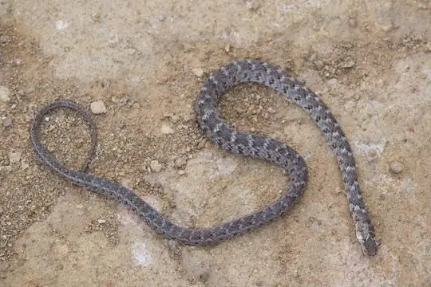
Almaden Ground SnakeErythrolamprus almadensis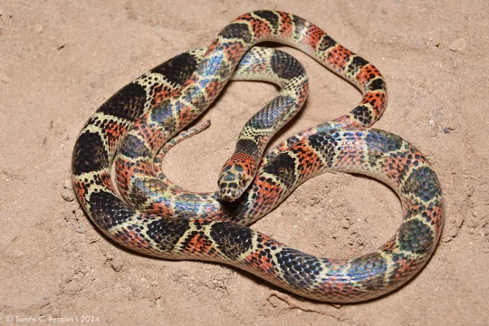
Amazon False Coral SnakeOxyrhopus rhombifer Banded Hognose SnakeXenodon pulcher
Banded Hognose SnakeXenodon pulcher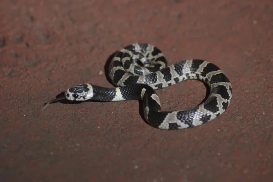
Bolivian Tree SnakeDipsas turgida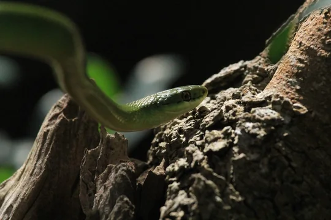
Brazilian Green RacerPhilodryas aestiva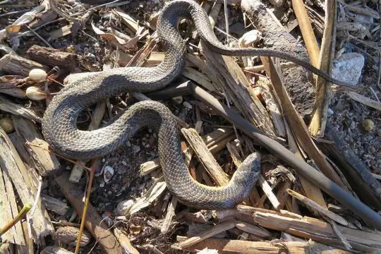
Brazilian KeelbackHelicops infrataeniatus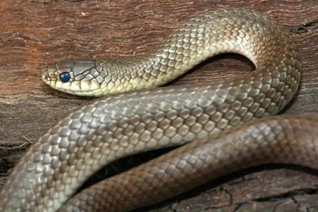
Burrowing Night SnakePhilodryas agassizii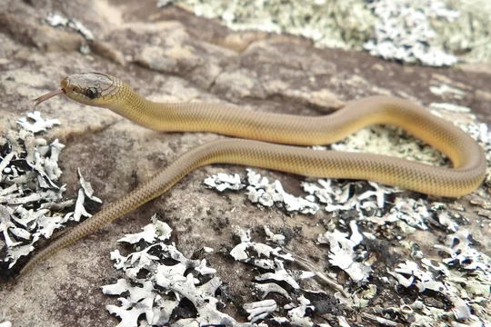
CulebraParaphimophis rusticus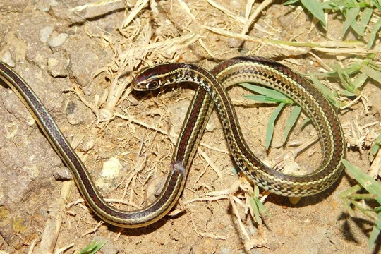
Fronted Ground SnakeLygophis flavifrenatus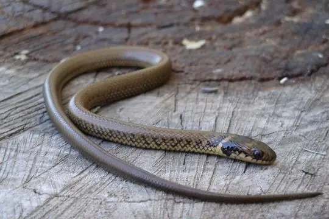
Golden LiophisErythrolamprus semiaureus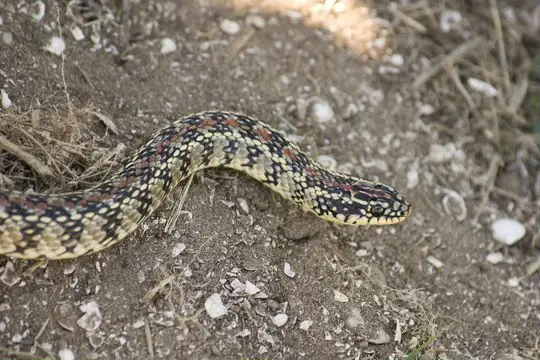
Golden-belly SnakeLygophis anomalus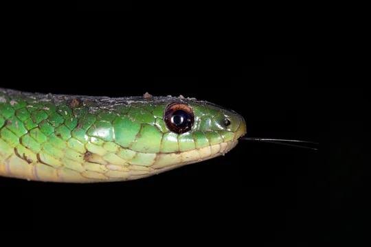
Jaeger's Ground SnakeErythrolamprus jaegeri- No photo yetJan's Hognose SnakeXenodon histricus
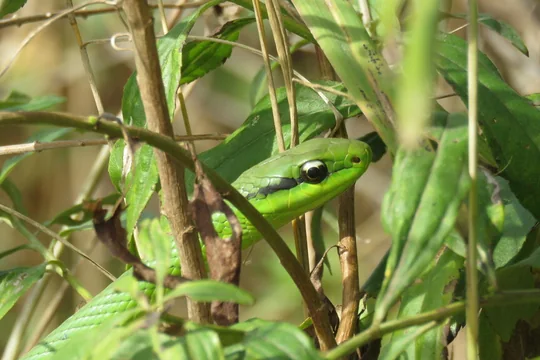
Lichtenstein's Green RacerPhilodryas olfersii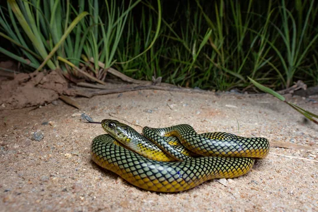
Military Ground SnakeErythrolamprus miliaris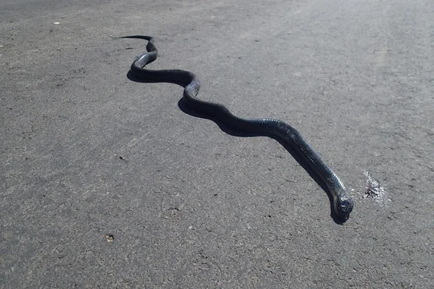
Mussurana (maculata)Boiruna maculata Natterer's Hognose SnakeXenodon nattereri
Natterer's Hognose SnakeXenodon nattereri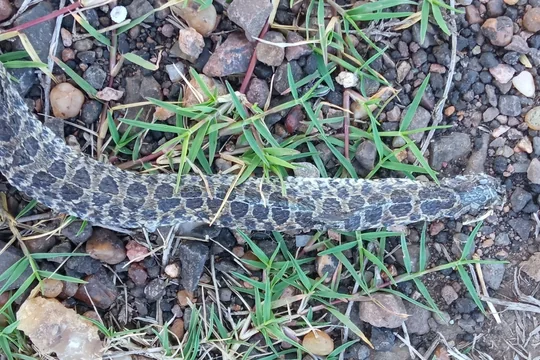
Ocellated Pampas SnakeTomodon ocellatus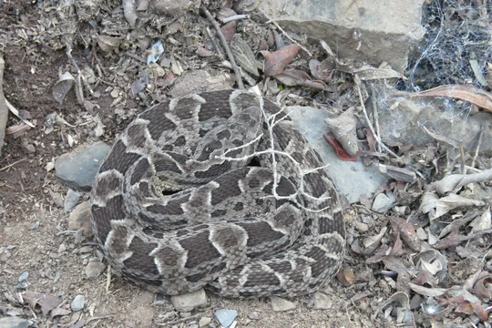
Pampas LanceheadBothrops pubescens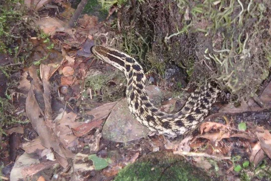
Pampas SnakeTomodon dorsatus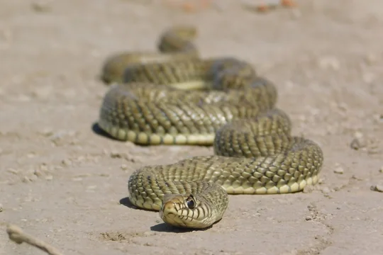
Patagonia Green RacerPhilodryas patagoniensis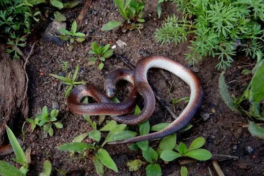
Reticulate Ground SnakeAtractus reticulatus Rio Grande do Sul Blind SnakeEpictia munoai
Rio Grande do Sul Blind SnakeEpictia munoai South American Hognose SnakeXenodon dorbignyi
South American Hognose SnakeXenodon dorbignyi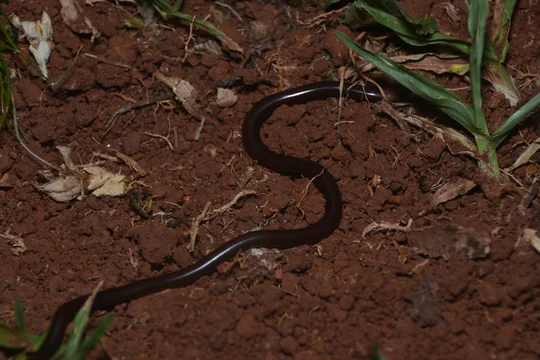
Ternetz's Blind SnakeLiotyphlops ternetzii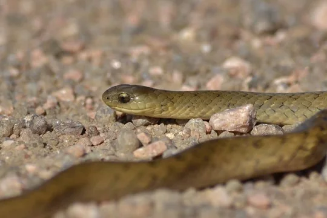
Tropical Forest SnakeCalamodontophis paucidens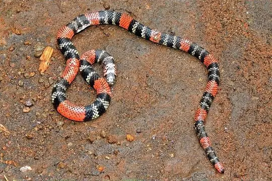
Uruguayan CoralsnakeMicrurus altirostris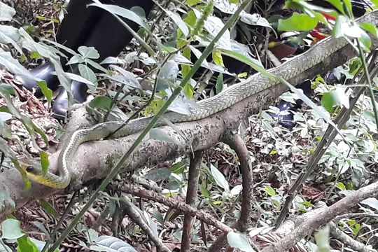
Uruguayan SipoChironius gouveai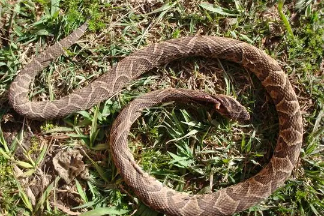
UrutuBothrops alternatus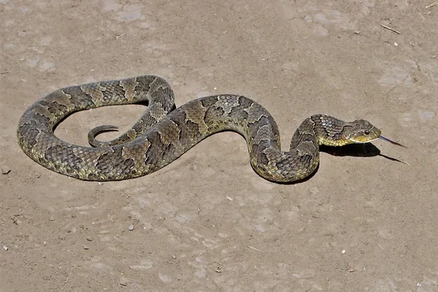
Wagler's SnakeXenodon merremii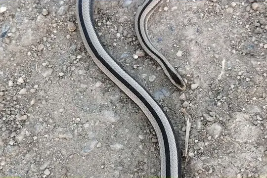
Wide Ground SnakePsomophis obtusus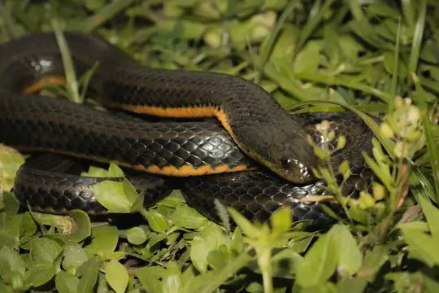
Wied's KeelbackHelicops carinicaudus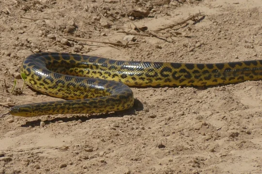
Yellow AnacondaEunectes notaeus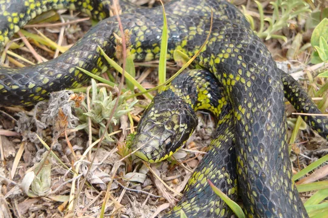
Yellow-bellied SnakeErythrolamprus poecilogyrus- No photo yetColuber alternans
No snakes in Uruguay match.
Uruguay’s snakes in numbers
- Families: Colubridae 29, Viperidae 2, Anomalepididae 1, Boidae 1, Elapidae 1, Leptotyphlopidae 1.
How precisely they are recorded
Of the 35 living species recorded in Uruguay, 23 are recorded by department in SnakeList’s data; 12 are recorded only for Uruguay as a whole, so the department pages list them as possible rather than recorded. SnakeList records each species by department, not by exact spot, so a species listed for a department may live in only part of it.
Departments
The departments where SnakeList records snakes, with how many living species are recorded in each. Each page has its species, venomous snakes, families, the species found only there, its cities and neighbours.
- Artigas 14 species
- Canelones 9 species
- Cerro Largo 11 species
- Colonia 7 species
- Durazno 1 species
- Flores 4 species
- Florida 5 species
- Lavalleja 6 species
- Maldonado 11 species
- Montevideo 2 species
- Paysandú 9 species
- Río Negro 6 species
- Rivera 5 species
- Rocha 14 species
- Salto 7 species
- San José 9 species
- Soriano 3 species
- Tacuarembó 6 species
- Treinta y Tres 5 species
No place matches that.
Cities
Its biggest cities, biggest first. SnakeList records snakes by department, not by city, so each city page shows the species recorded in its department and, separately, those only possible there - not species confirmed in the city.
- Montevideo Montevideo Department
No place matches that.